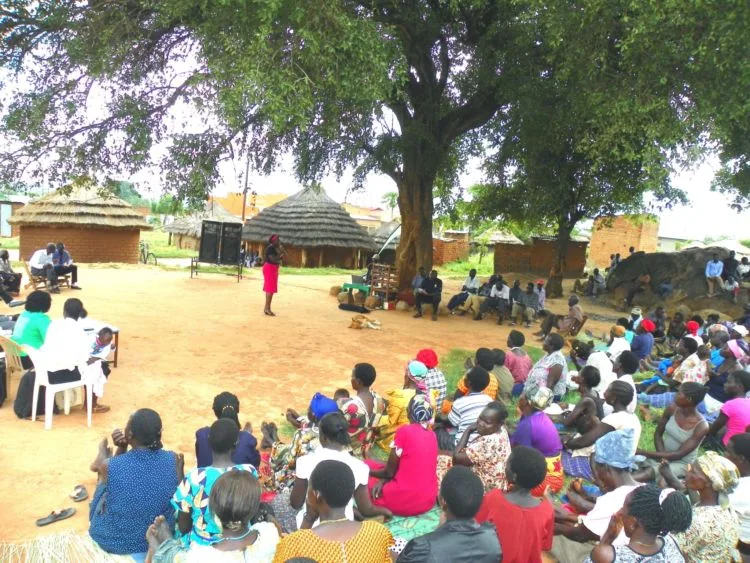
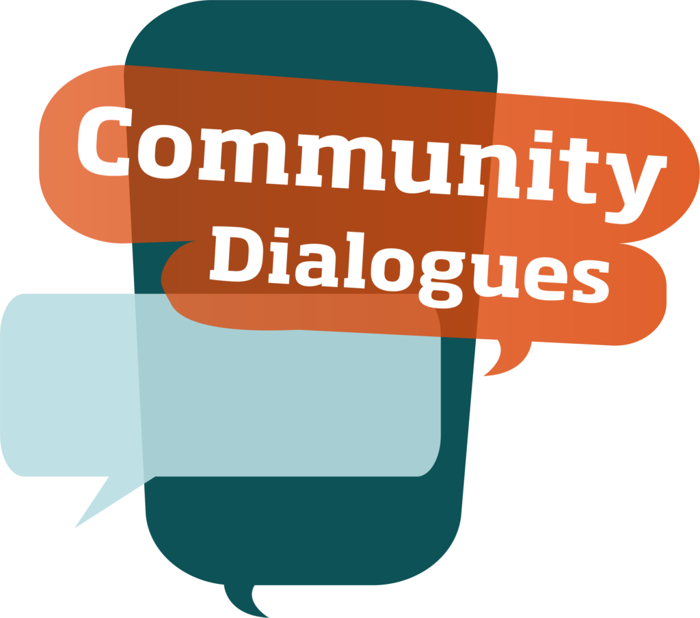
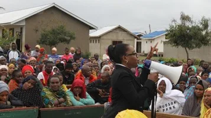
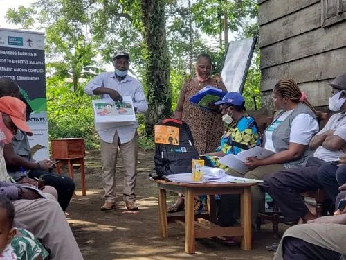

Expanded Nursing Uganda Explanation
Community Dialogue should be understood beyond a short definition. Link the concept to patient history, focused assessment, common risks, nursing priorities, documentation and evaluation of outcomes.
01 Community dialogue
- It also has the same meaning as participatory or interactive communication which involves exchange of information, ideas and opinions between individuals, communities and stakeholders to enhance understanding, setting of priorities and working out possible solutions.
- This is guided by the principles of mutual respect ,teamwork and shared vision.
- This approach re-energizes and re-direct the community potential to recognize and appreciate their role in promoting their health and well-being. This is done through participatory communication, both the households and communities as consumers and primary provider of health and health workers as service providers will appreciate the need to learn from each other and subsequently embrace the need to change their attitudes and practices towards each other and their own health.
02 Importance of community dialogue.
- Enhancing community partnership for health and development.
- Focusing on the problem to be solved together by the concerned parties basing on the existing experience capacities and opportunities rather than predetermined massages that must be communicated by one party and received by others.
- Enhance capacities for action and promoting behaviour change as parties.
- Advocating for a supportive environment to promote health and community well being.
- Promoting active community participation and sense of ownership for health.
- Enhancing interphase between communities and health facilities.
- Mobilizing the resources and ensuring proper use to promote health.
- Developing an integrated and coordinated approach to promote health.
- Promoting early treatment seeking behaviour ,referral and follow-up system.
It is through this approach that communities and households can be empowered to take health as their personal responsibility , intiate and participate in the activities that promote their well being.
03 Levels of community dialogue.
These include:
- National level
- District, subcounty level.
- Health facility level.
- Parish and community level.
- It establish a movement to champion the issues and concerns that affect the health and welfare of the people especially thevulnerable groups.
- It targets policymakers , legislators ,donors ,religious , traditional and the private sector to formalize supportive policies, mobilise and allocate resources to promote community empowerment for health.
- This target the political and administrative leadership ,NGO , the private sector , religious and traditional institutions and social groups to enhance and facilitate , adopt and operationalize policies and allocate resources to promote community empowerment for better health of the community.
- This is the source of service delivery for community ,it plays a role in promoting application and adoption of community dialogue for improved health.
- This is done through;
- Application and practice of community dialogue principles in clinic and community setting during clinical consultation and meeting.
- Facilitating capacity building for community empowerment through dialogue.
- Provide necessary information for and materials to facilitate deliberation and taking informed decision to key issues arising from the community dialogue question and concerns.
- Promote follow up.
- An intervention that disregards these two vital levels cannot succeed in terms of empowering the community and is not sustainable .
- Therefore the focus of community empowerment should be at parish and the household level.
- Here the emphasis is to build the capacity of the parish development committees and village health teams to adopt and implement the community dialogue approach to bring about desired change in the health and well being of the people with emphasis on children and women.
04 **Steps to community dialoguing**
- Build a Dialogue Team to host the event . A team approach to convening a dialogue will help to build ownership and spread the tasks involved. The team can help you to define goals for the project.
- Determine your own goals for the dialogue. Your community may have some specific goals for the dialogue itself and the information received from it. The design of the dialogue session should reflect this. Your community might want to deepen existing work in the community or reflect on lessons learned.
- Determine the group of participants. Who would you like to bring together to share ideas and opinions? To minimize the effort required for recruitment, you may find it easiest to partner with an existing group. This will allow you to use their network.
- Select and prepare the facilitator . Good facilitation is critical to a successful dialogue.You should enlist an experienced facilitator or someone who is a good listener and can inspire conversation while remaining neutral.
- Set a place, date, and time for your dialogue . Choose a spot that is comfortable and accessible. Dialogues can be conveniently held in someone’s home, a community center, place of worship, library, or private dining room of a local restaurant. Hospitals, schools, and businesses often have conference rooms or cafeterias where groups can meet. Keeping sites convenient to the participants is key
- Create an inviting environment. Seating arrangements are important in a smaller group. To assure strong interaction, place seats in a circle or in a “U” formation. Refreshments (or food for a breakfast or lunch meeting) are a welcome and appropriate sign of appreciation but are not absolutely necessary.
05 **BENEFITS OF CONDUCTING A COMMUNITY DIALOGUE**
- Encourages Community Participation, Support, and Commitment: Community dialogues create a platform for active participation and involvement of community members in addressing challenges. When individuals are engaged in decision-making and problem-solving processes, they feel a sense of ownership and commitment to the solutions, leading to more sustainable behavior change.
- Promotes Sharing of Information and Ideas: Community dialogues foster open communication and information sharing among community members. Different perspectives, knowledge, and experiences are exchanged, leading to a broader understanding of issues and potential solutions.
- Facilitates Joint Community Assessment: Through dialogues, community members collaboratively assess their own needs, problems, and priorities. This shared assessment helps in identifying key issues and tailoring interventions to address specific community challenges effectively.
- Enhances Understanding of Communities: Community dialogues provide a space for stakeholders to gain a deeper understanding of the community’s context, including its social dynamics, traditions, cultural values, and local resources. This understanding is crucial for designing relevant and culturally sensitive interventions.
- Identifies Key Individuals for Partnerships: Dialogues enable the identification of influential individuals, leaders, and stakeholders within the community who can play a role in facilitating partnerships and driving change. These individuals can help advocate for and implement sustainable interventions.
- Promotes Accountability and Ownership: Engaging community members in dialogue fosters a sense of responsibility and ownership over the outcomes. When communities actively contribute to decision-making and solutions, they are more likely to hold themselves accountable for implementing and sustaining those solutions.
- Strengthens Social Cohesion: Community dialogues contribute to building trust, understanding, and relationships among diverse community members. This strengthens social cohesion, encourages collaboration, and empowers individuals to collectively address challenges.
- Supports Local Problem-Solving: Through dialogue, community members collectively analyze problems, brainstorm solutions, and prioritize actions. This participatory approach ensures that interventions are contextually appropriate and address real community needs.
- Enhances Sustainability of Interventions: Involving the community in dialogue ensures that interventions are designed to fit the local context and are more likely to be embraced and sustained over the long term. Community members become advocates for the changes they help design.
- Empowers Marginalized Voices: Dialogues provide a platform for marginalized or underrepresented voices within the community to be heard. This inclusivity helps in addressing inequities and ensuring that interventions are equitable and inclusive.
- Builds Consensus and Collaboration: Through open discussions, community dialogues allow diverse viewpoints to be heard, leading to the development of shared goals, strategies, and action plans. This consensus-building process fosters collaboration among community members.
- Fosters Innovation and Creativity: Interaction among community members in a dialogue setting encourages the sharing of creative ideas and innovative approaches to addressing challenges, leading to more effective and sustainable solutions.
06 **CHALLENGES OF CARRYING COMMUNITY DIALOGUE**
- Time-Consuming Dialogues: Community dialogues can be time-consuming, as they involve bringing together a diverse group of individuals, allowing everyone to voice their opinions, and facilitating a meaningful exchange of ideas. The process of reaching consensus or understanding can take a considerable amount of time.
- Poor Preparation and Planning: Insufficient preparation and planning can significantly impact the quality of a community dialogue. Lack of clear goals, agenda, facilitation techniques, and materials can lead to confusion, unproductive discussions, and failure to achieve meaningful outcomes.
- Objectors Refusing Participation: Some community members may object to participating in dialogues due to various reasons such as skepticism, lack of trust, or differing viewpoints. Their absence can hinder the representativeness and effectiveness of the dialogue process.
- Lack of Resources: Insufficient resources, whether financial, logistical, or human, can limit the scope and reach of community dialogues. Without adequate resources, it can be challenging to organize, promote, and sustain dialogues over time.
- High Expectations: Unrealistic or overly ambitious expectations from community dialogues can lead to disappointment and frustration. When the outcomes don’t meet the heightened expectations, it may discourage participation and undermine the dialogue process.
- Lack of Unity and Cooperation: Effective community dialogues require participants to work together, share ideas, and find common ground. If there’s a lack of unity and cooperation among participants, the dialogue can become contentious and unproductive.
- Hostility of Community Members: Hostile or confrontational attitudes among community members can create a challenging environment for productive dialogue. Personal conflicts or deep-seated disagreements can hinder open and respectful communication.
- Insecurity: Insecurity, whether physical or emotional, can prevent community members from participating freely in dialogues. Fear of reprisals, discrimination, or harassment may discourage individuals from expressing their views openly.
- Endemic Diseases: The presence of endemic diseases can pose health risks to participants, making it difficult to gather for community dialogues. Concerns about disease transmission may deter people from attending or engaging fully.
- Geographic Location: Geographic barriers, such as remote or isolated areas, can hinder accessibility to community dialogues. Limited transportation options and long distances may prevent some community members from attending.
- Poor Infrastructure: Inadequate facilities and infrastructure (such as meeting spaces, technology, or communication tools) can impact the feasibility and effectiveness of community dialogues. Lack of proper facilities can hinder participation and communication.
07 **Solutions to the above problems**
1. Dialogues are Time Consuming:
- Solution: Proper Planning and Clear Objectives Plan the dialogue in advance, setting clear objectives and a structured agenda. Define the scope of discussion and allocate time for each topic to ensure efficient use of time.
2. Poor Preparation and Planning:
- Solution: Efficient Communication and Thorough Preparation Communicate with community members prior to the dialogue, sharing the purpose and importance of the discussion. Adequate preparation includes gathering relevant information and materials.
3. Objectors Refusing to Participate:
- Solution: Inclusive Engagement and Addressing Concerns Engage objectors individually before the dialogue, addressing their concerns and emphasizing the benefits of their participation. Create an inclusive atmosphere that encourages diverse viewpoints.
4. Lack of Resources:
- Solution: Providing Adequate Resources Allocate sufficient resources for venue, materials, refreshments, and transportation if needed. Seek partnerships or sponsorships to ensure resource availability.
5. Too Much Expectation:
- Solution: Transparency and Clear Communication Be transparent about the scope and objectives of the dialogue. Clearly communicate what can be achieved through the dialogue and manage expectations accordingly.
6. Lack of Unity and Cooperation:
- Solution: Training and Team Building Conduct team-building activities or training sessions to promote unity and cooperation among community members. Highlight the importance of collaboration for effective problem-solving.
7. Hostility of Community Members:
- Solution: Establishing Trust and Open Dialogue Build trust through open communication and active listening. Address concerns and conflicts sensitively, fostering a safe environment where community members feel respected and valued.
8. Insecurity and Geographic Location:
- Solution: Ensuring Safety and Accessibility Choose a safe and accessible venue for the dialogue. Consider community preferences and concerns related to safety when selecting the location.
- Involve community leaders, this helps in mobilization and also identifying people to hold a dialogue.
9. Disease Endemics:
- Solution: Health Precautions and Awareness Prioritize health and safety by implementing necessary precautions, such as providing hand sanitizers and following health guidelines. Raise awareness about disease prevention.
- Health education and awareness about endemics.
10. Poor Infrastructure:
- Solution: Adaptation and Resourcefulness Make use of available resources to improve the dialogue environment. Arrange seating, lighting, and amenities to ensure a comfortable setting despite limited infrastructure.
- Lobbying of resources for infrastructure problems.
08 Nursing Uganda Clinical Lens
Use Community Dialogue as a practical nursing topic, not only a memorized definition. Move from individual illness to prevention, population risk, health education and continuity of care.
- What to understand first: define community dialogue, identify the normal or expected pattern, then explain what changes when the patient is unwell.
- Why it matters in care: the nurse must recognize risk early, explain findings clearly, document accurately and know when to escalate.
- How to revise it: connect each point to assessment, nursing diagnosis or care problem, intervention, rationale and evaluation.
09 Assessment Guide
- Who is affected, where they live, risk factors, resources and barriers to care.
- Environmental hygiene, nutrition, immunization, water, sanitation and health-seeking behaviour.
- Community beliefs, leaders, household practices and surveillance data.
10 Nursing Priorities, Rationales and Outcomes
- Promote prevention, early detection, referral and community participation.
- Use clear health education matched to literacy, culture and available resources.
- Document findings and coordinate with community health structures.
The rationale for these priorities is patient safety: nursing actions should prevent deterioration, reduce discomfort, support recovery and create clear evidence for the next caregiver.
- Expected outcome: The community understands the message, risk is reduced and follow-up or referral pathways are active.
11 Patient Teaching and Revision Check
- Explain community dialogue in simple language the patient or caregiver can repeat back.
- Teach warning signs, medicine or follow-up instructions, hygiene or lifestyle points where relevant.
- For exams, prepare a short answer using: definition, causes or risk factors, signs, assessment, management, complications and prevention.
- For ward practice, document baseline findings, actions taken, patient response and the plan for review.
Illustrations and Diagrams (7)






Related Video Lectures
Watch nursing lecture videos on YouTube for this topic. Opens in a new tab.
Watch on YouTubeExternal link: YouTube may use its own cookies and terms. Nursing Uganda is not affiliated with YouTube.